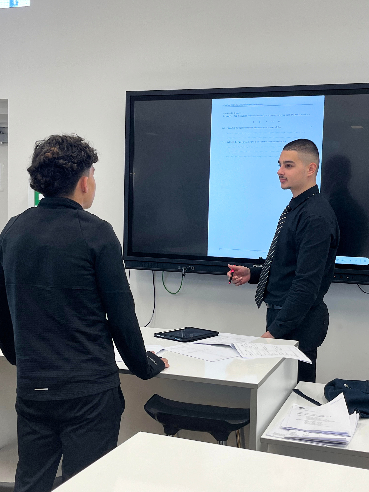

Home
This graphic represents my focus on differentiation in teaching:
Hi! I'm Mario. I'm studying the Bachelor of Education (Secondary) at ACU. My major is Mathematics and my minor is Computing. I work as a Learning Support Officer at Marist College Kogarah which has shown me the importance of differentiation in the classroom as I work with students with diverse learning needs.
When I graduated in 2022 I was first in NSW in Mathematics Standard 2, and I love sharing my knowledge with students at the school and with students that I tutor privately.